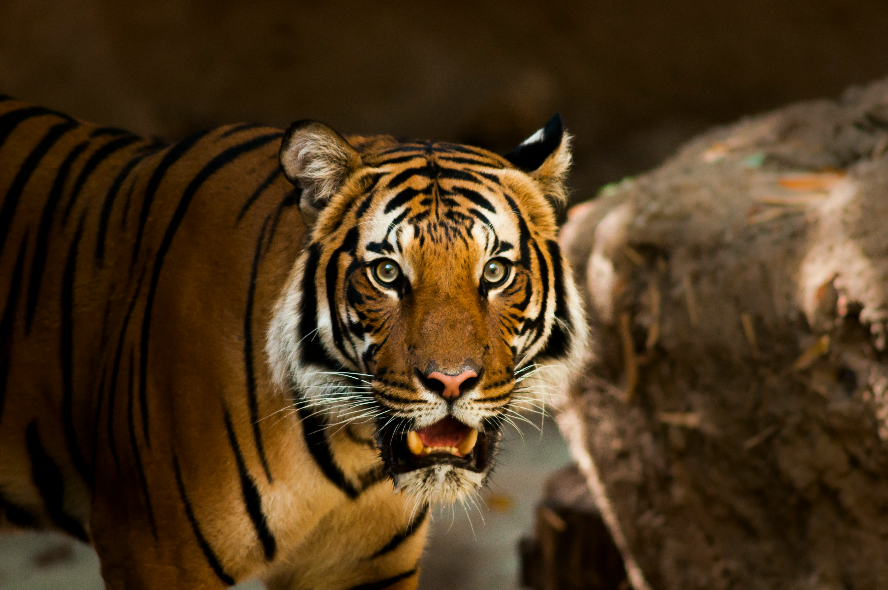

Find out all about each tiger subspecies, and learn about their habitats, physical characteristics, and behavioral traits.
Tiger Subspecies
While there were once nine distinct subspecies of tigers, three have now gone extinct. Of the remaining six, each is slightly different from the others in order to be better accustomed to their habitats and lifestyles.
Bengal Tigers
Bengal tigers are also known as the Indian tiger, or the Royal Bengal tiger. Being native to the Indian subcontinent, they are found in the countries of India, Bangladesh, Nepal, and Bhutan. They are known for being the largest subspecies.[6]
White tigers originate from a genetic mutation in the Bengal tiger subspecies. Unfortunately, the mutation makes it much harder for the tiger to survive in the wild due to the lack of camouflage, and as such, most white tigers can only be found in captivity.[6]
Bengal tigers prefer hunting large mammals such as deer or water buffalo, but also frequently hunt medium-sized species, such as wild boar or monkeys.[1] Uniquely, they also like to eat small prey such as hares or peafowl as a snack.
Siberian Tigers
Siberian tigers are also known as the Manchurian tiger, Korean tiger, Amur tiger, or Ussurian tiger, and live in Northern Asia. They are usually smaller than Bengal tigers, although they can occasionally become larger than them in captivity. Being specifically tailored to live in the harsh cold of the north, they are broad-chested, wield larger skulls, and have much thicker fur. They typically have less vibrant coats than other tiger subspecies.[6]
Siberian tigers typically eat prey such as deer, wild boar, and elk; some are also known to have attacked and eaten bears.[1] They are at the top of their food chain, although they share a lot of their prey in competition with wolf populations.

Sumatran Tigers
Sumatran tigers live on the Indonesian island of Sumatra and are the smallest tiger species. They live completely isolated from other subspecies, and as such have different genetics from their mainland cousins. They have very slight builds, suitable for slinking around in the Sumatran forests, and also have extremely dark and well-defined stripes. Their stripes uniquely also cover their forelegs.[6]
Sumatran tigers eat fish, monkeys, crocodiles, fowl, wild pigs, and deer.[1] Additionally, they cover leftover carcasses with grass to eat later when they become full.

Indochinese Tigers
Indochinese tigers are also known as Corbett’s tigers, being named after a British hunter, Jim Corbett. Corbett would hunt down tigers in the early 20th century, and as such was associated with them. They distinctly have single, narrow stripes in their fur. Indochinese tigers are native to Southeast Asia; and are dwindling extremely rapidly due to the usage of their parts in rituals, for meat, jewelry, medicines, wines, and clothes. They are almost entirely gone, with only a few hundred tigers left in the wild.[6]
Their main diet consists of deer, antelope, wild pigs, buffalos, baby rhines, turtles, fish, baby elephants, and more.[1] When food is scarce, they can additionally go after smaller prey as well.
Malayan Tigers
Also known as the Southern Indochinese tiger, Malayan tigers are from Southeast Asia and very similar in appearance to the Indochinese tiger. They were only recently understood to be a unique breed in the early 2000s. Just like the Indochinese tigers they live with, their numbers are dwindling rapidly due to the usage of their parts locally. There are less than two hundred breeding adults left in the world.[6]
Malayan tigers eat food similar to the Indochinese subspecies.[1]

South China Tigers
Also known as the Chinese, Xiamen, and Amoy tigers, South China tigers were native to east and central China, but one has not been sighted in the wild in decades. In fact, only a few dozen are known to exist, and all of them are in captivity. While there used to be thousands in the late twentieth century, the Chinese government chose to kill off displaced tigers when developing land for human infrastructure, leading to their decimation in the wild.[6]
South China tigers eat serow, deer, and wild boar.[1]
Extinct Subspecies
The most unique of the species that no longer exists was the Caspian tiger, living around the Caspian Sea towards the west. They were very large and powerful, but were noted for having fur colors so muted that they looked grayish. Two other subspecies, the Bali and Javan tigers, used to live with the Sumatran tiger in the Indonesian islands. The Bali tiger used to be the world’s smallest tiger until its extinction and has not been seen since the 1930s. The Javan tiger was slightly larger than the Bali tiger and has been listed as extinct since the 1970s; sightings are periodically reported, but it is thought that these are false alarms.[6]
Subspecies Chart
| Subspecies | Scientific Name | Native Region | Typical Weight (M/F, lbs.)[6] | Endangerment Status |
|---|---|---|---|---|
| Bengal | panthera tigris tigris | Indian subcontinent | 397-569/220-350 | Endangered |
| Siberian | panthera tigris altaica | North Asia | 389-475/260-303 | Endangered |
| Sumatran | panthera tigris sumatrae | Sumatra | 220-310/165-243 | Critically endangered |
| Indochinese | panthera tigris corbetti | Southeast Asia | 331-430/220-290 | Near-critically endangered |
| Malayan | panthera tigris jacksoni | Southeast Asia | 220-308/165-245 | Critically endangered |
| South China | panthera tigris amoyensis | China | 287-386/220-254 | Critically endangered; extinct in the wild |
Tiger Traits
Physical Characteristics
Coat
Tigers sport reddish-orange coats with black stripes along their bodies. No two tigers have the exact same markings![13] Their striped coats help with camouflage amidst foliage, since they primarily catch prey through ambush hunting; tiger fur, in general, provides warmth and protection as well.

Tigers have two types of fur: guard hair, and underfur.[12] Guard hairs are longer and more durable (for protection); the underfur traps air, serving as insulation and keeping the tiger’s body warm.
Tigers also have unique white spots on the back of their ears; two possible functions of these are “false eyes” (which make the tiger seem more watchful) and communication purposes (twisting them around to show aggression).
Size Trend
Regarding all the subspecies, size typically decreases between them the further south the range of the subspecies in question reaches.[12] Stripes also tend to have darker colorations the further south a tiger subspecies can extend.
Legs and Claws
Tigers’ hind legs are longer than their forelegs. This allows them to leap forward great distances; some can go up to 10 meters in distance.[12] Foreleg bones are extremely strong and dense, allowing for their swift takedown of larger prey. Ligaments tightly connect foot bones to soften landing impacts from running, pouncing, and leaping.

Tiger claws extend up to 10 centimeters long and can grasp and hold onto prey. Each paw has four normal claws and a dewclaw that is farther back on the foot (doesn’t touch the ground when walking) and functions like a thumb. Tiger claws are retractable and curved, which is great for grasping prey and climbing trees upward, but bad for climbing down (so they can often be seen going down backward, slowly shuffling down from the top of the tree).
Skull and Collarbone
Tiger skulls are stout and rounded for more jaw support.[12] Their jaw muscles are attached to the sagittal crest (a ridge of bone along the skull), allowing them to have incredible force in clamping down on prey. Tigers have smaller collarbones which allows them to have greater stride lengths.
Teeth
Tigers have the largest canines of any big-cat species (6.4-7.6cm) and have many pressure-sensing nerves to aid in severing the prey’s neck.[12] Carnassials (back teeth) allow the tiger to shear meat like knives, which the tigers can swallow big pieces of at a time. They can additionally penetrate deep into the prey due to a large gap between the canines and carnassials. Smaller incisors in the front of the mouth aid in picking off meat and feathers from prey. Lastly, a tiger’s tongue has a rough, rasping texture to additionally strip off elements from prey.
Behavioral Traits
Activity Cycle and Hunting
Tigers are active during both day and night, depending on the activity of their prey; they shift their schedules to match them.[8] Weather typically influences their activity during the day; for example, they are less active in extremely hot temperatures and prefer cooler and shadier times of day. Some subspecies also regulate their body temperature by lying in shaded pools or streams in the daytime. Additionally, human activity and tiger-hunting affect tiger activity patterns.
Tigers primarily use ambush tactics in their hunts.[1] They use the dense forest foliage to mask themselves from their prey, silently approaching until they come within striking distance. They then launch a powerful attack, aiming for the neck, and try to kill the prey as swiftly and efficiently as possible, serving as a highly effective method of hunting and minimizing the risk of injury in a scuffle. Tigers consume about 35-110 pounds of meat at a given time but typically eat once every two days. A tiger will, on average, kill about one large animal per week.
Social Behavior
Tigers are most often solitary in the wild, typically only associating more during the mating season and when a mother is taking care of her young.[8] Besides those two exceptions, solitary living is generally more favorable because forest habitats make group communication unviable (due to reduced visual contact) and prey is usually too scattered to support larger groups. When tigers are alone, they will have far less competition for food. On the contrary, tigers in captivity can typically form more social bonds as the need to be solitary goes away entirely; there is virtually no competition between them.
Males occasionally associate with females and cubs, being observed spending time with them, licking the cubs, or sharing kills. Cubs tend to remain with their mothers for 17-24 months after birth.[8] During this time, they play a lot with each other, and engage in a wide variety of rough-and-tumble play:
- They play-fight, which helps them develop their hunting skills and strength.
- They stalk and ambush each other, which helps them develop their stealth and agility.
- They chase each other, which helps them develop their speed and endurance.
- They wrestle, which helps them develop their strength and coordination.
Territory and Home Range
Territorial behavior is mostly affected by prey density and distribution, and habitat, sex, and age also play a large role.[8] In most factors, females and males operate slightly differently.
| Females | Males |
|---|---|
|
Females typically occupy small, mutually exclusive territories across many locations. Some exceptions do exist though; places like India have seen females share their range with other females. Females typically have home range sizes variable across distribution, seemingly increasing in range in the Russian Far East (200-400 km2) compared to places like India (10-51 km2). They occupy less of their ranges when their cubs are very young and slowly branch out as they grow older. Females also typically live near other closely related females. |
Males typically have territories that overlap with at least one other female, but seldom overlap with other males. One exception to this is in the Russian Far East; male tigers have highly overlapping ranges, but two males typically aren’t seen in the same area at the same time. Males typically have territories that are 2-15 times larger than females and have home range sizes that vary according to prey density and the number of females in their range. They expand and contract depending on the number of tigers that can be defended at a time. In some regions, this can include up to 5 females. Males disperse away from their birth area, which is likely an evolutionary tactic to avoid inbreeding and sibling competition. |
Defensive Behavior
Defensive threats can be indicated with facial expressions and/or warning behavior.[8] Tigers may expose their canines, opening their mouths and pulling back their corners. They also flatten their ears, enlarge their pupils, and use growling as warning signs before escalating to full-scale aggression through rushing and roaring.
Females will often attack to protect their cubs, with a ferocity that can even take down elephants. In some cases, they even fight off and kill rival male tigers for the sake of defense.
Aggression
Tigers generally do not share, although a male tiger may allow a female to feed from his kill.[8] If a female made the kill, a male would wait until she had finished feeding to indulge in consuming the prey. Male tigers are relatively less aggressive towards cubs than other big cats, but in rare cases, are still known to kill them (likely due to factors such as competition, rivalry, and scarcity of food). Fights between adults that occur in defense of territory are often severe and may result in injury.
Tigers show aggression in almost the opposite manner of defense; they close their mouths, stand their ears up and rotate them to show the white spots, and squint while decreasing their pupil size.
Communication Through Vocalization
Tigers are known to vocalize in a variety of ways.[8]
The basic roar is used infrequently and usually for long-distance communication, drawing attention, and making other tigers aware of an individual’s presence. It can be used to announce a large kill, by a mother to summon her cubs, and to attract a mate. This type of roar can be heard from up to 3 kilometers away, and additional sound waves in the infrasonic range (below human hearing) can travel even farther to allow for further communication. Every individual tiger has a distinguishable roar, and researchers have been able to pinpoint which tiger made a specific roar with astonishing accuracy.

A coughing roar is often used in response to another animal approaching a kill or in challenge to a human; often serving as a warning or indication of presence. A more subdued roar is also used often, being heard from up to 400 meters away and serving as a less extreme version of the basic roar.
Researchers are not sure if tigers can purr; many believe that the hyoid bone is too flexible to generate a purr like a domestic cat, but some disagree.[8] At this time, there isn’t a lot of information or research on their ability to purr or the usage of purring as a social cue.
In addition to the above distinguishable noises, tigers additionally make many other types (such as groaning, grunting, meowing, growling, or hissing), though most are not as significant in meaning.
Communication Through Olfactory and Visual Signals
The primary olfactory indication that tigers use is the scent mark. Tigers of both sexes scent-mark their territorial boundaries.[8] This can be done by spraying bodily secretions on prominent sites or by rubbing scent-gland-produced secretions around, typically marked by scraping the ground, rolling in the grass, or rubbing on trees.
A tiger’s scent can convey age, sex, and availability to mate, and cubs can identify their mother’s scent.[8] Tigers react to stronger scents with the flehmen response typically used by many carnivores and other species, as it increases the flow of scent molecules into the animal.
The main visual signal that tigers use is scratching to mark territory. Tigers use their paws to leave scrape marks on the ground or stand on their hind legs and scratch higher up on trees to physically mark their land.
Locomotion
Tigers typically walk many miles throughout their range while searching for prey; if unsuccessful, a tiger may cover about 16-32 km in one night.[8] A tiger typically approaches within about 9-24 m of its prey before it can rush it and bring it down. They are very powerful swimmers; they can cross rivers up to 8 km wide and have even been seen 11 km out to sea. As previously mentioned, they can also climb trees and will not hesitate to do so.
Interspecies Interactions
Tigers often have aggressive encounters with other large carnivores.[8] For example, large packs of dholes can deter tigers in confrontations, at times killing and eating a tiger (though many dholes are killed in the fight). Tigers will also occasionally target and kill dholes on their own terms. Tigers have also been seen to kill leopards in the past. Both of these cases of aggression with other carnivores stem from competition for resources.
Tigers can also sometimes have aggressive encounters with ungulates, their main sources of prey. They have occasionally been killed by water buffalos and gaurs in fights; these are primarily the reasons why tigers have adapted to swiftly take down prey, to avoid messy confrontations where the tiger has to risk its life for a successful hunt.
Tigers, of course, have aggressive encounters with humans, but not necessarily by choice. While they normally prefer to avoid people and kill them less often than they have opportunities to, man-eating tigers typically occur in places with a shortage of natural prey; they are usually incapacitated in some form or are transients. For example, young male tigers can often be pushed into human-occupied territories in search of land to claim as their own. Regardless of the reason for conflict, tigers give humans a warning growl when provoked and allow them to move away before attacking. Most tiger attacks involve humans who are squatting down or bending over, which projects an impression of being prey-like and encourages the tiger to pounce. Some solutions to tiger attacks include wearing face masks on the back of the head or setting up electrified human dummies to emulate negative reinforcement. Sadly, these are only short-term fixes that do not solve the problem of tiger habitat loss that causes tiger-human clashes.
Tiger Habitats

Adaptations to Various Habitats
Tigers live in tropical rainforests, mangrove swamps, grasslands, temperate forests, and snowy coniferous forests, with each subspecies adapting to their specific environment.[4] Tigers can live from coastal to high mountain elevations and in temperatures of both extremes, ranging from -40 degrees C to 40 degrees C.[9] To settle, they look for areas close to water (for both themselves and their prey), a place with a sufficient prey base, and (usually) foliage cover for hunting. Other than that, tiger subspecies are generally very adaptive to their environments; they adopt different hunting styles depending on the habitat.[1]
| Forested Habitats | Grasslands and Savannas | Mangrove Swamps |
|---|---|---|
|
Tigers in forested habitats, which is the most common terrain for them, primarily prey on large ungulates and use foliage to their advantage in ambush hunts. |
In grasslands and savannas, where there is far less cover, tigers typically hunt during dawn or dusk, where prey visibility is much lower, to account for the lack of dense foliage. Tigers have exceptional night vision due to the necessity for night hunting. |
The tigers living in places like the Sundarbans mangrove forest face a unique, waterlogged habitat. They incorporate fish and crabs into their usual ungulate-based diet and are generally adept swimmers. |
Evolution
Throughout the Ice Age, during which the Earth underwent periodic climatic fluctuations, various types of ungulates developed, such as deer, antelopes, cattle, and wild pigs; it is believed that tigers evolved to be hunters of these ungulates.[14] Historically, tiger expansion was confined by ecological factors like deserts and rising sea levels (and subsequently the loss of land bridges); oceans stopped them from reaching places like North America. Historically, tigers existed throughout much of Eastern and Southern Asia, as well as in parts of Central and Western Asia and the Middle East surrounding the Caspian Sea; they practically expanded throughout the entirety of Asia.[13] However, they lost about 93% of their habitat area in just a century, only inhabiting about a dozen countries nowadays.[9] In the current geological epoch, human development is mostly the reason for the shrinking tiger habitats.[14] In today’s age, tigers typically avoid places of human domination, although the young, old, wounded, and diseased venture there occasionally.[9]
Reintroduction to Old Habitats
Very recently, massive efforts have been occurring to reintroduce tigers to places they had not inhabited in decades. The most prominent example of this is the extremely recent restoration of a tiger population in a region of Russia where they were virtually absent for more than 50 years.[2]
Taking place between 2012 to 2021, conservationists specifically aimed to examine the success of rehabilitating orphaned cubs and releasing them into the wild after being raised by humans. The efforts were led by the Russian Academy of Sciences and Russian Geographical Society, with the Wildlife Conservation Society (WCS) playing a key role in saving orphaned cubs in the wild and then following them after release. According to WCS:
“The study followed the fate of six tiger cubs who were found as orphans in the forests of the Sikhote-Alin Mountains of Russia—the last stronghold of tigers in that country. The cubs had been kept in specially designed enclosures where contact with humans was kept to an absolute minimum, and at appropriate ages, the cubs were offered live prey to learn how to hunt. [...] The cubs were subsequently released as subadults (at least 18 months old) into the Pri-Amur region of Russia. [...] The study collected data on the success of these newly released cubs to hunt and secure wild prey in their new homes.”[2]
The study concluded with success. Conservationists were able to find that the released tigers eventually produced at least six litters of at least twelve cubs. Before the study had taken place, researchers had not been sure how to reintroduce tigers to areas in the wild, as tigers from zoos were not well equipped to survive alone. However, with the result of the study being a success, it provides a framework for preparing cubs to be released into the wild and gives hope for change in the future.
Learn more about the reasons for tiger endangerment, as well as other efforts that conservationists are making to save tigers and build up their population once more, here.